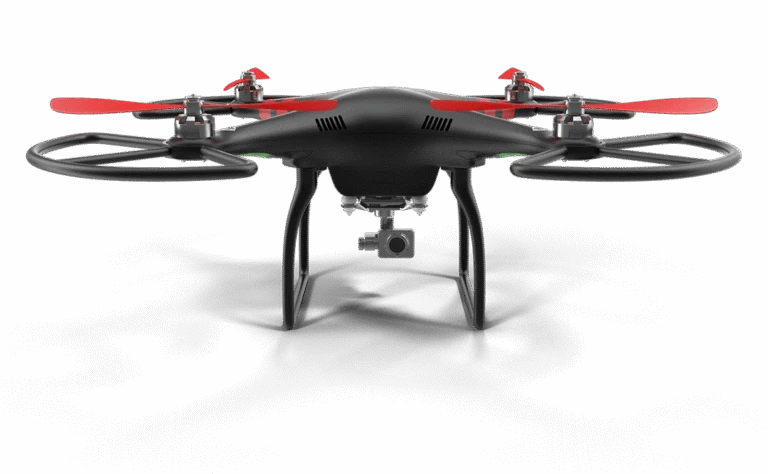
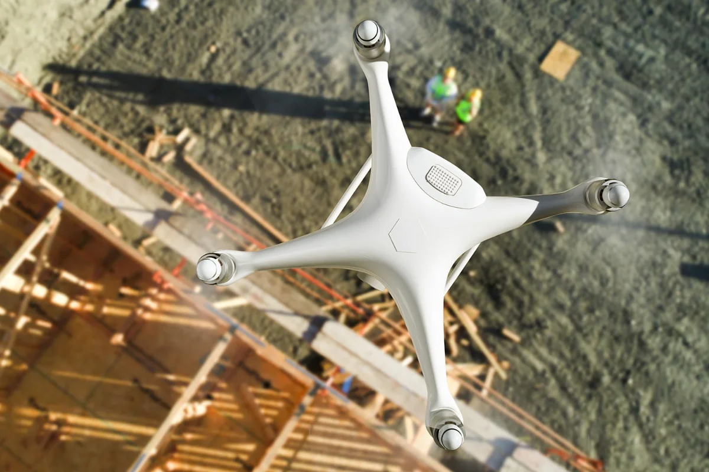

Integrating aerial point clouds into civil software
widagdo Mapping
Learn MoreTransform complex terrain into high-precision 3D models and survey data. Fast, accurate, and ready for your CAD/GIS workflow.
Let's Get StartedSee our drone mapping operations in action.


About Us
We deliver fast, centimeter-accurate aerial mapping to eliminate project delays and keep your field operations on schedule.
Certified flight operations backed by full commercial coverage for complete risk mitigation.
Our Services
High-resolution aerial mapping and contour lines designed for site planning and land development.
Learn More Topographic Map
Topographic MapDetailed 3D mesh and point cloud models generated for seamless CAD, BIM, and GIS software integration.
Learn MoreFast, accurate cut/fill calculations and stockpile volume measurements with zero operational site risks.
Learn MoreVolume SurveyTrusted by Companies Relying on High-Precision Spatial Data.
Deliverables
Distortion-free aerial imagery you can measure directly.

Clean contour lines for grading, drainage and site planning.

Color-coded terrain surfaces for cut/fill and slope analysis.
Dense 3D data that drops straight into Civil 3D and BIM.
Why Choose Us

Engineering-grade accuracy powered by RTK/PPK tech and Ground Control Points.
Get CAD-ready maps and 3D data in as little as 48 hours instead of weeks.
Files (.DXF, .SHP, .LAS) ready to import straight into Civil 3D, ArcGIS, and BIM.
Drone vs Ground
 Ground survey · 3 weeks · sparse pointsDrone survey · 48 hours · millions of points
Ground survey · 3 weeks · sparse pointsDrone survey · 48 hours · millions of pointsOur Technology

Hover to see specs
Hover to see specs
Hover to see specs
Hover to see specs
Testimonial
See how our precision drone data helps engineers, project managers, and site teams save time and build with confidence.
Case Studies
Commercial Infrastructure
Client Type: Infrastructure Contractor
Challenge: Traditional ground survey teams needed over 3 weeks to measure a 120-hectare, high-risk corridor, causing site preparation delays.
Mining & Resource Management
Client Type: Mining Operations Group
Challenge: Manual volume calculations were hazardous for field surveyors and led to inconsistent inventory estimates.
Land Development
Client Type: Real Estate Developer
Challenge: Steep terrain and heavy vegetation made initial grading plans and elevation assessments difficult and error-prone.
Our Journey
Two pilots and one fixed-wing drone start mapping local construction sites.
Centimeter-level positioning becomes standard on every flight.
Mining, roads and land development join our client list.
A new processing pipeline cuts turnaround from weeks to two days.
Trusted by engineers and site teams across industries.
Let's eliminate survey delays on your next project
Stop waiting weeks for ground surveys. Get fast, CAD-ready aerial mapping tailored to your project timeline.
Schedule A SurveyHow It Works
From flight planning to final CAD export, we deliver engineering-grade spatial data in four simple steps.
Set up precise project parameters before taking off to ensure centimeter-level spatial data.
Execute rapid aerial scanning without interrupting ongoing site operations or ground machinery.
Transform raw aerial photos into ready-to-use spatial models and reports delivered within 48 hours.
Pricing
$650/ site
$1,800/ project
Custom
Frequently Asked Questions
With RTK/PPK technology and Ground Control Points (GCPs), we achieve centimeter-level accuracy (typically 1 to 3 cm horizontally and vertically), making our spatial data reliable for engineering and construction planning.
Most projects are delivered in as little as 48 hours after the flight.
DXF, SHP, LAS, GeoTIFF and more, ready for Civil 3D, ArcGIS, and BIM.
No. Flights run alongside ongoing site work and ground machinery.
Yes. Multi-sensor payloads and ground control let us map difficult terrain accurately.
Latest Blogs
widagdo Mapping
Learn More
widagdo Surveying
Learn Morewidagdo Photogrammetry
Learn More